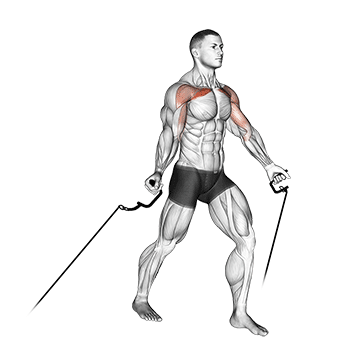
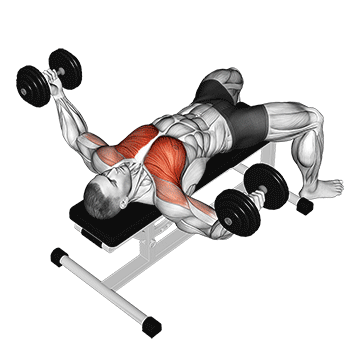
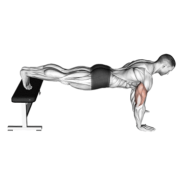
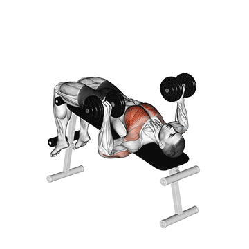
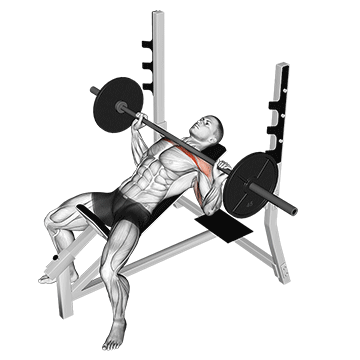

Crucifixo Polia Baixo
No crucifixo na polia baixa, segure as alças com os cabos ajustados em posição baixa. Com os braços levemente flexionados, traga as mãos para frente, unindo-as, contraindo o peitoral.

Crucifixo com Halter
No crucifixo para peito, deite-se em um banco plano, segure um halter em cada mão. Abra os braços lateralmente com cotovelos levemente flexionados e depois os una acima do peito.

Flexão Declinada
Na flexão declinada, posicione os pés em uma superfície elevada e as mãos no chão. Flexione os braços, descendo o peito em direção ao solo, e retorne, focando no peitoral superior.

Supino Declinado
No supino declinado, deite-se em um banco inclinado para baixo. Segure a barra ou halteres com as mãos afastadas. Abaixe o peso até o peito e empurre-o para cima, focando no peitoral inferior.

Supino Inclinado
O supino inclinado é um exercício de musculação que foca no peitoral superior, ombros e tríceps. Realizado em banco inclinado, melhora força, hipertrofia e estabilidade muscular na parte superior do corpo.

Supino Reto
O supino reto é um exercício básico de musculação que trabalha peitoral maior, tríceps e deltoides. Realizado em banco plano, promove força, hipertrofia e estabilidade na musculatura do tronco.